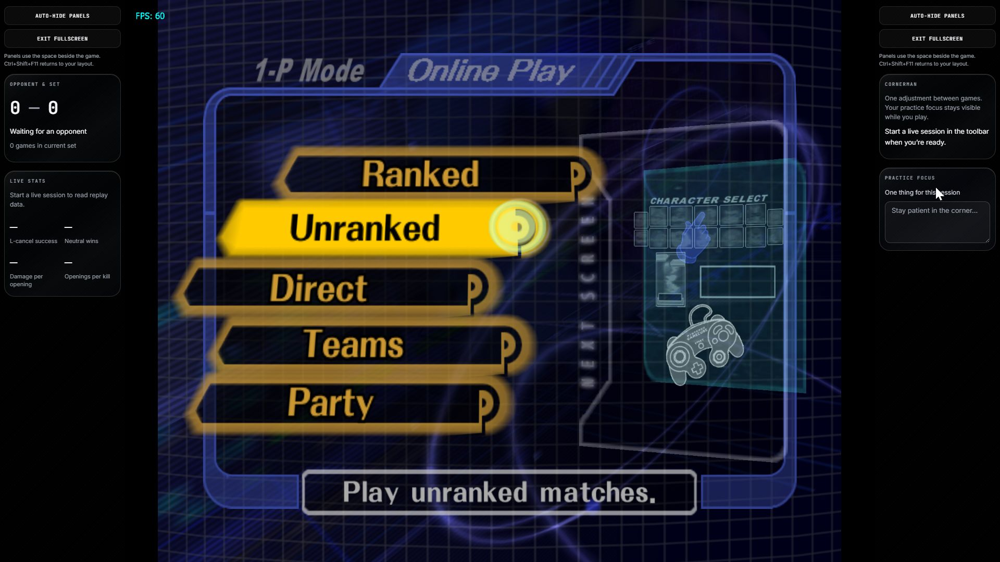
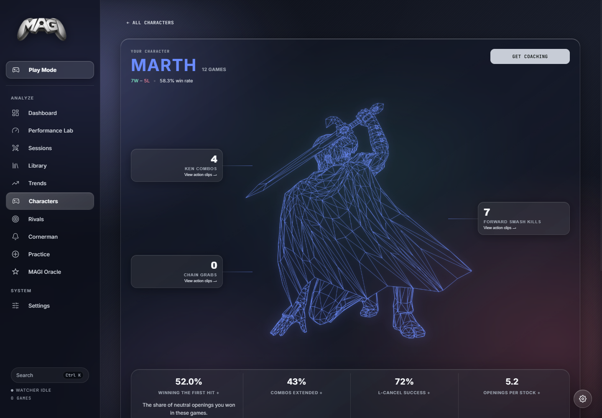
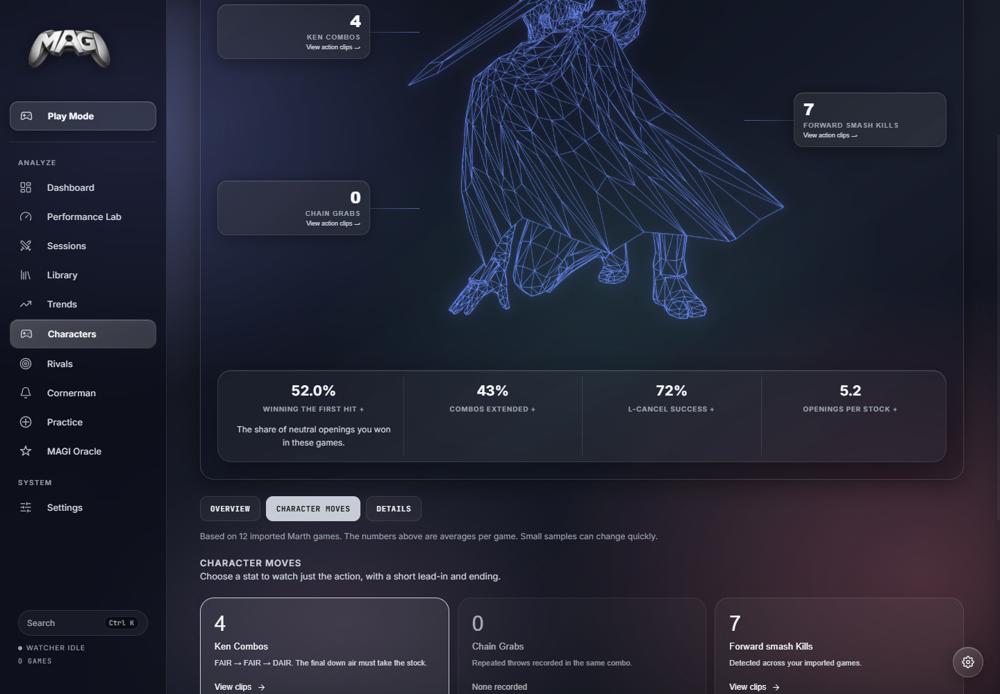
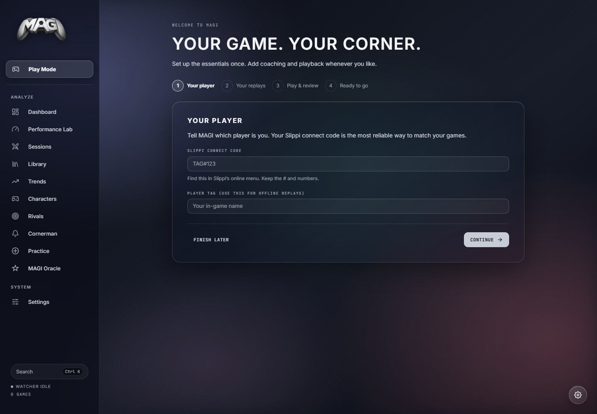

M elee A nalysis Through G enerative I ntelligence.
Play with your stats beside you. Find the moments that matter. Take one clear adjustment into the next game.
Melee in the middle.
Your corner beside it.
Play Mode · Windows
Launch your Slippi Netplay Dolphin from MAGI and keep the game in the middle. Customize lists every module with what it shows and whether it needs a live session: live statistics, opponent and set tracking, Cornerman, Oracle, recent form, practice focus, notes, and the input display. Add one to either sidebar or drag it there.
Drag a module by its title to reorder it or move it across, drag a sidebar's inner edge to resize it, and fold any module down to its title. Save the arrangement as a named scene beside the Minimal, Live Coaching, and Practice presets.
The input display draws your controller as a GameCube wireframe and lights each control while it is held, from the inputs the running game read on that frame. It shows your controller only, during a game.
Go Fullscreen with panels visible in the side space, or choose auto-hide and reveal them at the edge. Your game keeps its 4:3 aspect ratio.

Go from a stat to the replay.
Replay review
Review games in Game Theater, jump to supported coaching timestamps, and replay character action clips. See the sequence in context before deciding what to practice.

See what changes across your games.
Pattern recognition
The Dashboard names your best character from your whole record: the highest win rate once small samples are discounted, among characters with at least 10 decided games. Beside that character's wireframe it says what you do better with them than with your other characters and what to work on, with the counts behind both.
Track recent form, compare sessions, and review trends across your replay history. Optional AI analysis stays scoped to what you opened it on: one game, one set, one character, or every game you have recorded.

Know your character. Find your next rep.
Stats that matter
Explore character records, execution and punish statistics, matchup results, and supported character-specific sequences. Click the surrounding stats for replay examples, expand core metrics for explanations, and open details for habits, recovery, stock losses, stages, and lifetime totals. Move and technique entries link to short replay clips when timestamp evidence and the original replay are available.



One adjustment between games.
Integrated live coaching
Cornerman reads Slippi replay files as they are written, surfaces detected events and running statistics, and uses your selected AI provider for concise between-game coaching. Coaching, alerts, and optional spoken callouts are integrated into MAGI and Play Mode; there is no separate popup window.
When enabled and configured, launching Melee starts tracking from the hosted Dolphin's replay output. Replay stats work without AI; generated coaching uses the provider you choose.
Rival Dossier
Opponent scouting
Rival Dossier turns your match history into a focused opponent scouting report: habits, matchup patterns, punish openings, weaknesses to exploit, and a practical game plan for the next set or encounter.


Ask a better question.
Ask about any game, session, or pattern
Ask Oracle about recent form, matchup trends, or what to review next. It receives selected game context from MAGI and responds through your configured AI provider. Check its suggestions against the replay.

Give the next session a focus.
From review to practice
Optional AI practice plans turn supplied game context into suggested drills, with completion tracking and plan history. Keep a practice focus and notes beside the game in Play Mode.

Start with the replays you already have.
First-run setup
The setup wizard guides you through your player identity, Slippi replay folder, and first import. Use your connect code for online games or your tag for offline games. Subfolders are included, and duplicate files are skipped.
Add Netplay Dolphin, Playback Dolphin, and your own Melee game image when you want to play or review. Common Slippi Launcher paths are detected when available. Finish later and reopen the wizard from Settings whenever you need it.
Choose Liquid, Telemetry, Tournament, or Light for the main app and Play Mode. Motion shows data arriving and confirms what you did, and is skipped when your system asks for reduced motion. AI is optional throughout setup.

A few things to know.
Questions
Start with your replays. Add game hosting and AI when you want them.
What do I need to get started?
Download an available release, open the setup wizard, enter your player identity, and select your Slippi replay folder. Import existing games or enable watching for new ones. Playback and Play Mode also need the appropriate Slippi Dolphin and your own Melee game image. MAGI includes neither.
What is AI doing?
MAGI computes statistics and supported event detections from replay data. Optional AI features interpret supplied summaries and suggest coaching, scouting, and practice ideas. Those suggestions can be wrong; replay timestamps and clips are available for supported moments, not every claim.
Where does my data go?
Your replay files stay where you store them. Parsed statistics, notes, and cached reports are stored locally. Hosted AI features send selected summaries, game context, and prompts to the provider you choose; cloud voice sends the text to speak. A local model can keep analysis local. Downloads, update checks, and optional hosted services still use the network.
What does it cost?
MAGI is free and MIT-licensed. Parsing, statistics, browsing, and manual notes work without AI. Hosted AI and cloud voice may have provider charges or usage limits. You can configure your own provider or use a supported local model.
Can I use my ChatGPT plan or another AI provider?
Yes. In Settings → AI → ChatGPT plan, choose Continue with ChatGPT, complete browser sign-in and plan-usage consent, and select an available model. Account eligibility and usage limits apply. This connection does not give MAGI access to your ChatGPT conversations. MAGI also supports OpenAI, Azure OpenAI, OpenRouter, Anthropic, Gemini, local OpenAI-compatible endpoints such as Ollama or LM Studio, and Pollinations as an optional no-key hosted provider. Their availability, models, and limits vary. OpenAI's plan-usage documentation.
Does every stat or AI claim have a replay clip?
No. Supported timestamps, stock markers, highlights, and character action entries can open replay moments, but some older or count-only metrics have no timestamp evidence. Missing replay files cannot be played. AI suggestions need review, and named Melee techniques require their specific conditions; a similar hit sequence is not enough to confirm one.
How does it work with Dolphin?
Gameplay analysis reads Slippi replay files on disk. On Windows, Play Mode can launch and host the Netplay Dolphin window; replay review can launch Playback Dolphin. MAGI does not supply gameplay inputs or modify Melee mechanics. Check the rules of your event before using live coaching in competition.
Which platforms are supported?
The desktop project targets Windows, macOS, and Linux; check GitHub Releases for available builds. Native Play Mode hosting and embedded replay playback are Windows-only. Other platforms use external Dolphin playback.
Can I use it while streaming?
Play Mode is designed to keep the game and selected panels in one workspace on Windows. Configure your layout and voice volume, then make a short test recording in your capture software. Verify that your Dolphin gameplay appears in the recording and that no private notes or account details are visible.
Your next game has a corner.
Start with one session
Get an available build from GitHub Releases, check its version and release notes, then follow the setup wizard. The README covers Play Mode, replay review, providers, privacy, and building from source.